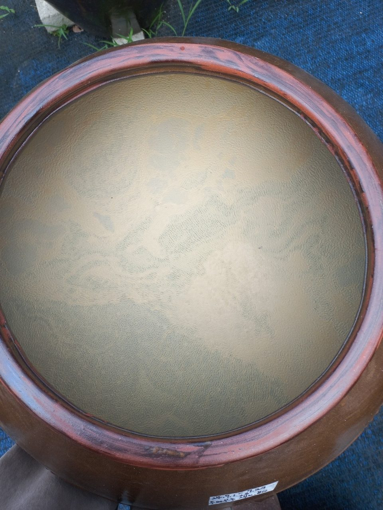
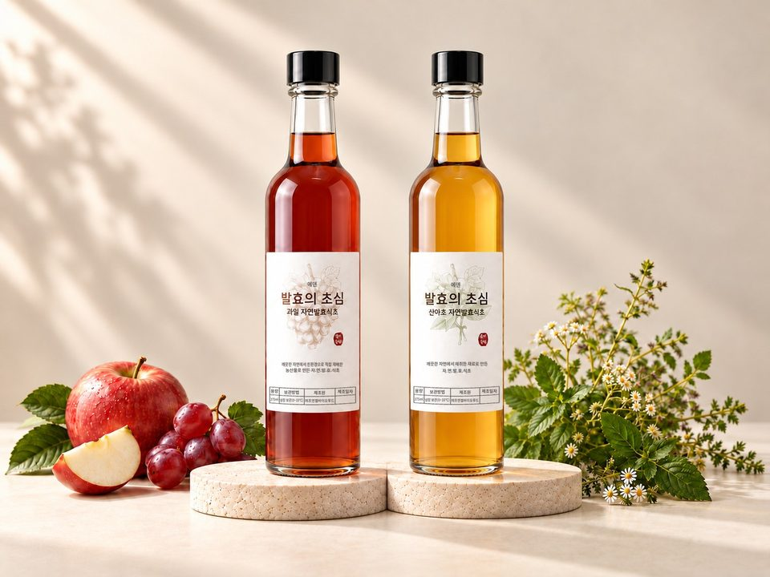
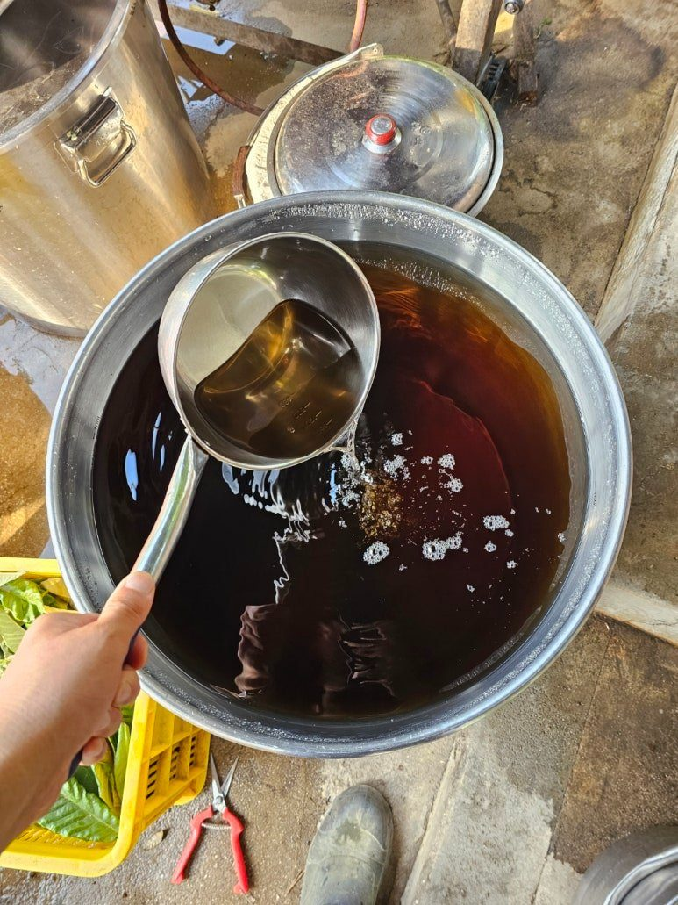
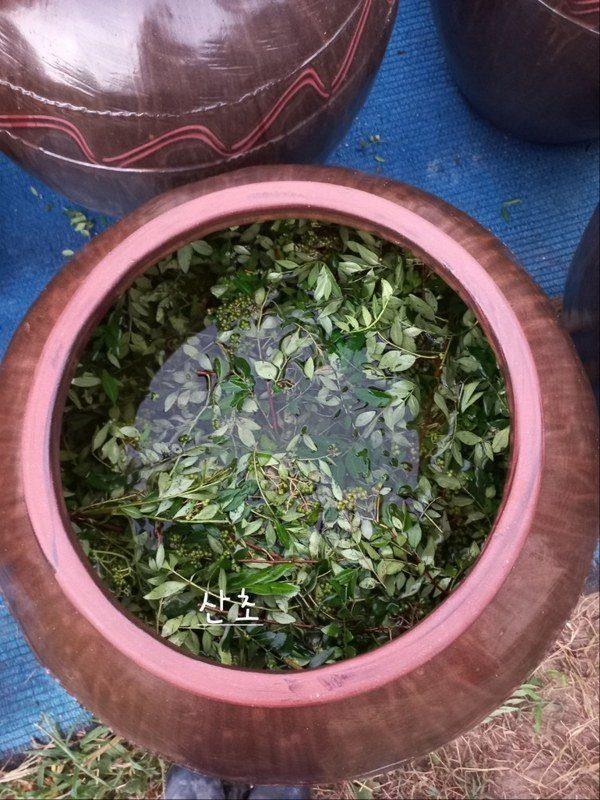
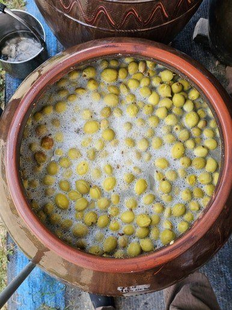
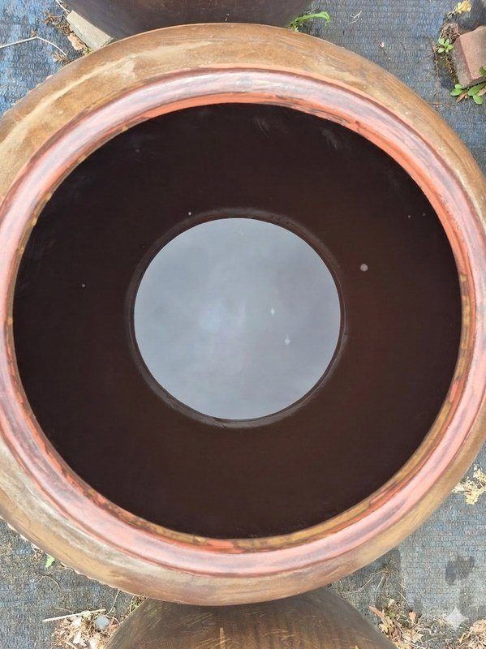
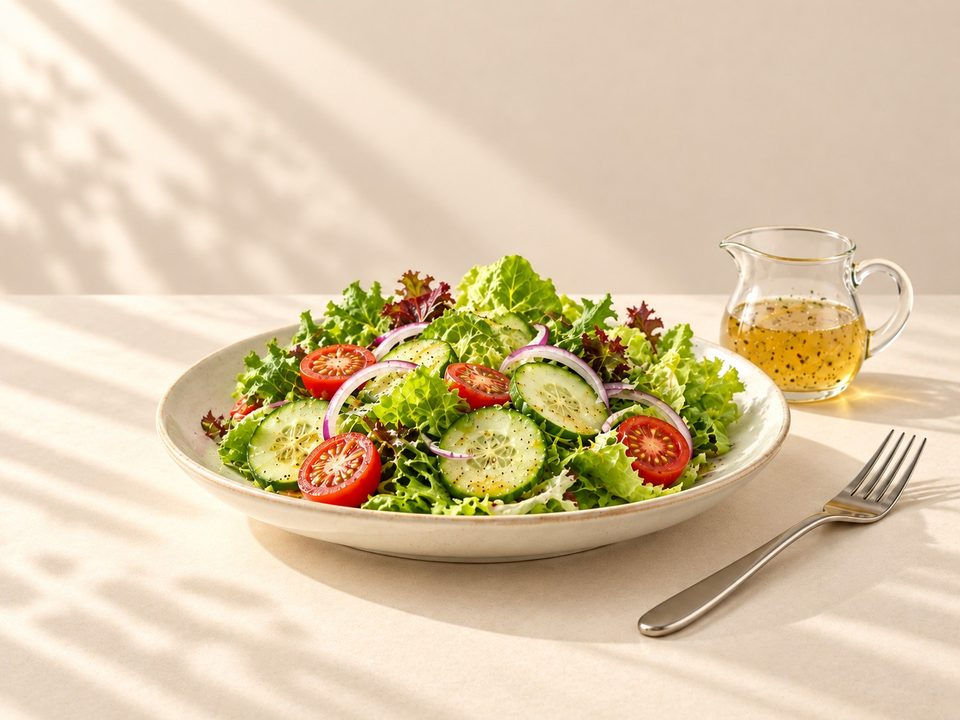
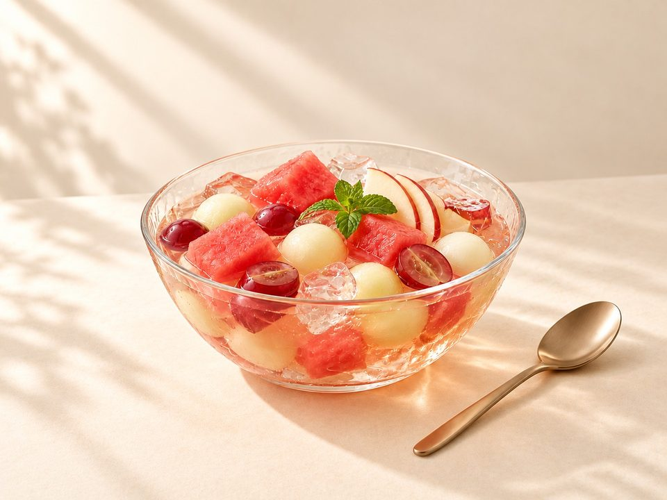
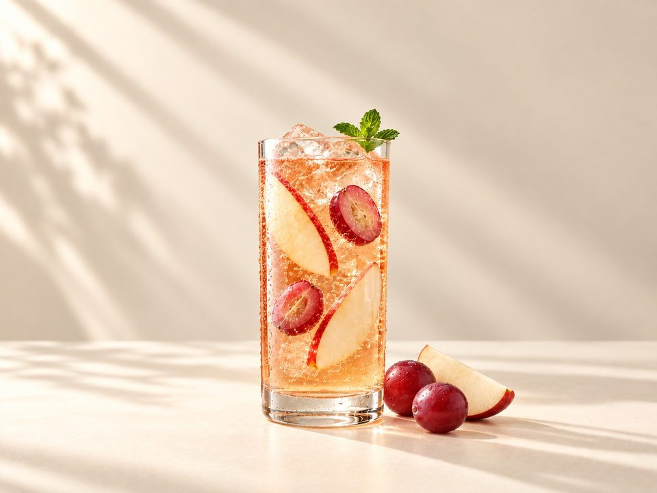

2년 이상 숙성
옹기숙성 된장
20,000원300g · 100g당 6,667원
자가 재배 콩 · 천일염


1 / 4
- 배송
- 택배 5,000원 · 100,000원 이상 무료
- 직접 수령
- 영동 농장 (충북 영동군 학산면)
- 주문 알림
- 주문 즉시 주문번호·결제 안내 문자
- 적립
- 회원 구매 시 2% 적립
옵션 24종
프리미엄
산야초
과일
총 상품 금액 (0개)0원

자연발효식초
발효의 초심
자연발효식초
자연 미생물로 복합 발효해
옹기에서 1년 6개월 이상, 길게는 3년 이상 발효·숙성합니다.
한눈에 보기
- 발효
- 누룩 · 종초 없이 자연 미생물로 복합 발효
- 숙성
- 1년 6개월 이상, 길게는 3년 이상, 자연 복합 발효·숙성
- 용기
- 옹기
- 용량
- 375ml
- 보관
- 실온 보관 가능
- 소비기한
- 제조일 - 스티커 라벨에 표기,
소비기한 - 제조일부터 2년

발효의 초심 자연발효식초
옹기에서 자연 복합 발효해 최소 1년 6개월 이상 발효·숙성했습니다.
- 발효
- 누룩 · 종초 없이 자연 미생물로 복합 발효
- 숙성
- 1년 6개월 이상, 길게는 3년 이상, 자연 복합 발효·숙성
- 용기
- 옹기
- 산도
- 총산 4% 이상
- 용량
- 375ml
- 보관
- 실온 보관 가능
이 병의 시간
자연발효식초가 되는 과정

01 / 04
원물·단당물
식초로 만들 원물을 준비하고 가마솥에서 단당물을 만듭니다.
발효의 바탕이 되는 첫 단계입니다.

02 / 04
옹기에 담기
원물과 단당물을 옹기에 담아 복합 발효를 시작할 준비를 합니다.

03 / 04
복합 발효
누룩 · 종초를 더하지 않고, 자연의 복합 미생물 대사활동으로 천천히 알코올이 만들어집니다.

04 / 04
초산 발효·숙성
미생물의 대사물질인 알코올이 초산균의 대사활동으로 초산 발효가 되면서,
1년 6개월에서 길게는 3년 넘게 발효 · 숙성을 합니다.
TASTE & USE
활용하는 방법
- 마시기원액 또는 물 · 탄산수에 희석
- 요리무침 · 드레싱 · 초절임
- 디저트화채 · 에이드에 레몬 대신
이렇게 드세요
탄산수

샐러드

화채

에이드
주문 후기
후기는 주문 단위로 남깁니다. 함께 주문한 상품이 있으면 그 상품의 후기에도 함께 보입니다.
첫 후기를 남겨 주세요.
상품정보제공고시
- 제품명
- 발효의 초심 천연식초
- 식품의 유형
- 발효식초
- 생산자 및 소재지 (수입품의 경우 생산자, 수입자 및 제조국)
- 농업회사법인 주식회사 에프엔엘바이오푸드 · 충청북도 영동군 학산면 모리2길 3-1
- 제조연월일, 소비기한 또는 품질유지기한
- 제조일 - 스티커 라벨에 표기,
소비기한 - 제조일부터 2년제조일로부터 2년제조일 - 스티커 라벨에 표기,
소비기한 - 제조일부터 2년제조일 - 스티커 라벨에 표기,
소비기한 - 제조일부터 2년제조일로부터 2년제조일 - 스티커 라벨에 표기,
소비기한 - 제조일부터 2년제조일 - 스티커 라벨에 표기,
소비기한 - 제조일부터 2년제조일로부터 2년제조일 - 스티커 라벨에 표기,
소비기한 - 제조일부터 2년제조일 - 스티커 라벨에 표기,
소비기한 - 제조일부터 2년제조일 - 스티커 라벨에 표기,
소비기한 - 제조일부터 2년제조일 - 스티커 라벨에 표기,
소비기한 - 제조일부터 2년제조일 - 스티커 라벨에 표기,
소비기한 - 제조일부터 2년제조일 - 스티커 라벨에 표기,
소비기한 - 제조일부터 2년제조일 - 스티커 라벨에 표기,
소비기한 - 제조일부터 2년제조일 - 스티커 라벨에 표기,
소비기한 - 제조일부터 2년제조일 - 스티커 라벨에 표기,
소비기한 - 제조일부터 2년제조일로부터 2년제조일 - 스티커 라벨에 표기,
소비기한 - 제조일부터 2년제조일 - 스티커 라벨에 표기,
소비기한 - 제조일부터 2년제조일로부터 2년제조일 - 스티커 라벨에 표기,
소비기한 - 제조일부터 2년제조일 - 스티커 라벨에 표기,
소비기한 - 제조일부터 2년제조일 - 스티커 라벨에 표기,
소비기한 - 제조일부터 2년 - 포장단위별 내용물의 용량(중량), 수량
- 375ml375ml375ml375ml375ml375ml375ml375ml375ml375ml375ml375ml375ml375ml375ml375ml375ml375ml375ml375ml375ml375ml375ml375ml
- 원재료명 (「농수산물의 원산지 표시 등에 관한 법률」에 따른 원산지 표시 포함) 및 함량(원재료 함량 표시대상 식품에 한함)
- 비파나무[비파 열매(국내산)100%, 비파 잎(국내산)100%]40%, 설탕시럽(설탕10%, 정제수90%)60포포나무[포포나무 열매(국내산)100%]40%,설탕시럽(설탕10%,정제수90%)60%짚신나물[짚신나물 잎(국내산)100%, 짚신나물 줄기(국내산)100%]40%, 설탕시럽(설탕10%, 정제수90%)60%황칠나무[황칠나무 뿌리·줄기·잎(국내산)100%]40%, 설탕시럽(설탕10%, 정제수90%)60%메밀[메밀 잎(국내산)100%,메밀 줄기(국내산)100%,메밀 꽃(국내산)100%]40%,설탕시럽(설탕10%,정제수90%)60%토란[토란 뿌리줄기(국내산)100%, 토란 줄기(국내산)100%, 토란 잎(국내산)100%]40%, 설탕시럽(설탕10%, 정제수90%)60%생강[생강 뿌리줄기(국내산)100%, 생강 줄기(국내산)100%, 생강 잎(국내산)100%]40%, 설탕시럽(설탕10%, 정제수90%)60%여주[여주 열매(국내산)100%,여주 잎(국내산)100%]40%,설탕시럽(설탕10%,정제수90%)60%갯기름나물[갯기름나물 잎(국내산)100%, 갯기름나물 줄기(국내산)100%]40%, 설탕시럽(설탕10%, 정제수90%)60%쑥[쑥 잎(국내산)100%, 쑥 줄기(국내산)100%]40%, 설탕시럽(설탕10%, 정제수90%)60%칡[칡 뿌리(국내산)100%, 칡 잎(국내산)100%, 칡 꽃봉오리(국내산)100%]40%, 설탕시럽(설탕10%, 정제수90%)60%배암차즈기[배암차즈기 잎(국내산)100%]40%, 설탕시럽(설탕10%, 정제수90%)60%생강나무[생강나무 잎(국내산)100%]40%, 설탕시럽(설탕10%, 정제수90%)60%제비꽃[제비꽃 잎(국내산)100%, 제비꽃 순(국내산)100%]40%, 설탕시럽(설탕10%, 정제수90%)60%돌나물[돌나물 순(국내산)100%]40%, 설탕시럽(설탕10%, 정제수90%)60%뱀딸기[뱀딸기 열매(국내산)100%]40%, 설탕시럽(설탕10%, 정제수90%)60%한삼덩굴[한삼덩굴 잎(국내산)100%, 한삼덩굴 순(국내산)100%]40%, 설탕시럽(설탕10%, 정제수90%)60%삼백초[삼백초 잎(국내산)100%,삼백초 줄기(국내산)100%,삼백초 뿌리(국내산)100%]40%,설탕시럽(설탕10%,정제수90%)60%엉겅퀴[엉겅퀴 잎(국내산)100%, 엉겅퀴 순(국내산)100%]40%, 설탕시럽(설탕10%, 정제수90%)60%차즈기[차즈기 잎(국내산)100%, 차즈기 끝가지(국내산)100%]40%, 설탕시럽(설탕10%, 정제수90%)60%익모초[익모초 잎(국내산)100%,익모초 줄기(국내산)100%]40%,설탕시럽(설탕10%,정제수90%)60%서양박하 잎(국내산)○○%, 녹양박하 잎(국내산)○○%, 애플민트 잎(국내산)○○%, 박하 지상부(국내산)○○%, 설탕시럽(설탕10%, 정제수90%)60%질경이[질경이 잎(국내산)100%]40%, 설탕시럽(설탕10%, 정제수90%)60%아로니아[아로니아 열매(국내산)100%]40%, 설탕시럽(설탕10%, 정제수90%)60%
- 소비자 안전을 위한 주의사항 (「식품 등의 표시ㆍ광고에 관한 법률 시행규칙」 제5조 및 [별표 2]에 따른 표시사항을 말함)
- 보관방법 - 직사광선을 피하고 냉암소에 보관하고, 개봉 후에는 뚜껑 닫아 반드시 냉장보관 하세요
반품 및 교환장소 - 제품구입처 및 판매원
본 제품은 공정거래위원회 고시소비자분쟁해결기준에 의거 교환 또는 보상 받을 수 있습니다.
부정불량 식품신고 - 국번없이 1399
소비자 상담실 - 010-5126-7578 - 소비자 상담 관련 전화번호
- 010-5126-7578
전체 옵션 고시 보기
| 옵션 | 제조연월일, 소비기한 또는 품질유지기한 | 포장단위별 내용물의 용량(중량), 수량 | 원재료명 (「농수산물의 원산지 표시 등에 관한 법률」에 따른 원산지 표시 포함) 및 함량(원재료 함량 표시대상 식품에 한함) |
|---|---|---|---|
| 프리미엄 | |||
| 비파 | 제조일 - 스티커 라벨에 표기, 소비기한 - 제조일부터 2년 | 375ml | 비파나무[비파 열매(국내산)100%, 비파 잎(국내산)100%]40%, 설탕시럽(설탕10%, 정제수90%)60 |
| 포포 | 제조일로부터 2년 | 375ml | 포포나무[포포나무 열매(국내산)100%]40%,설탕시럽(설탕10%,정제수90%)60% |
| 선학초 | 제조일 - 스티커 라벨에 표기, 소비기한 - 제조일부터 2년 | 375ml | 짚신나물[짚신나물 잎(국내산)100%, 짚신나물 줄기(국내산)100%]40%, 설탕시럽(설탕10%, 정제수90%)60% |
| 황칠나무 | 제조일 - 스티커 라벨에 표기, 소비기한 - 제조일부터 2년 | 375ml | 황칠나무[황칠나무 뿌리·줄기·잎(국내산)100%]40%, 설탕시럽(설탕10%, 정제수90%)60% |
| 산야초 | |||
| 메밀 | 제조일로부터 2년 | 375ml | 메밀[메밀 잎(국내산)100%,메밀 줄기(국내산)100%,메밀 꽃(국내산)100%]40%,설탕시럽(설탕10%,정제수90%)60% |
| 토란 | 제조일 - 스티커 라벨에 표기, 소비기한 - 제조일부터 2년 | 375ml | 토란[토란 뿌리줄기(국내산)100%, 토란 줄기(국내산)100%, 토란 잎(국내산)100%]40%, 설탕시럽(설탕10%, 정제수90%)60% |
| 생강 | 제조일 - 스티커 라벨에 표기, 소비기한 - 제조일부터 2년 | 375ml | 생강[생강 뿌리줄기(국내산)100%, 생강 줄기(국내산)100%, 생강 잎(국내산)100%]40%, 설탕시럽(설탕10%, 정제수90%)60% |
| 여주 | 제조일로부터 2년 | 375ml | 여주[여주 열매(국내산)100%,여주 잎(국내산)100%]40%,설탕시럽(설탕10%,정제수90%)60% |
| 방풍 | 제조일 - 스티커 라벨에 표기, 소비기한 - 제조일부터 2년 | 375ml | 갯기름나물[갯기름나물 잎(국내산)100%, 갯기름나물 줄기(국내산)100%]40%, 설탕시럽(설탕10%, 정제수90%)60% |
| 쑥 | 제조일 - 스티커 라벨에 표기, 소비기한 - 제조일부터 2년 | 375ml | 쑥[쑥 잎(국내산)100%, 쑥 줄기(국내산)100%]40%, 설탕시럽(설탕10%, 정제수90%)60% |
| 칡 | 제조일 - 스티커 라벨에 표기, 소비기한 - 제조일부터 2년 | 375ml | 칡[칡 뿌리(국내산)100%, 칡 잎(국내산)100%, 칡 꽃봉오리(국내산)100%]40%, 설탕시럽(설탕10%, 정제수90%)60% |
| 곰보배추 | 제조일 - 스티커 라벨에 표기, 소비기한 - 제조일부터 2년 | 375ml | 배암차즈기[배암차즈기 잎(국내산)100%]40%, 설탕시럽(설탕10%, 정제수90%)60% |
| 생강나무 | 제조일 - 스티커 라벨에 표기, 소비기한 - 제조일부터 2년 | 375ml | 생강나무[생강나무 잎(국내산)100%]40%, 설탕시럽(설탕10%, 정제수90%)60% |
| 제비꽃 | 제조일 - 스티커 라벨에 표기, 소비기한 - 제조일부터 2년 | 375ml | 제비꽃[제비꽃 잎(국내산)100%, 제비꽃 순(국내산)100%]40%, 설탕시럽(설탕10%, 정제수90%)60% |
| 돌나물 | 제조일 - 스티커 라벨에 표기, 소비기한 - 제조일부터 2년 | 375ml | 돌나물[돌나물 순(국내산)100%]40%, 설탕시럽(설탕10%, 정제수90%)60% |
| 뱀딸기 | 제조일 - 스티커 라벨에 표기, 소비기한 - 제조일부터 2년 | 375ml | 뱀딸기[뱀딸기 열매(국내산)100%]40%, 설탕시럽(설탕10%, 정제수90%)60% |
| 환삼덩굴 | 제조일 - 스티커 라벨에 표기, 소비기한 - 제조일부터 2년 | 375ml | 한삼덩굴[한삼덩굴 잎(국내산)100%, 한삼덩굴 순(국내산)100%]40%, 설탕시럽(설탕10%, 정제수90%)60% |
| 삼백초 | 제조일로부터 2년 | 375ml | 삼백초[삼백초 잎(국내산)100%,삼백초 줄기(국내산)100%,삼백초 뿌리(국내산)100%]40%,설탕시럽(설탕10%,정제수90%)60% |
| 엉겅퀴 | 제조일 - 스티커 라벨에 표기, 소비기한 - 제조일부터 2년 | 375ml | 엉겅퀴[엉겅퀴 잎(국내산)100%, 엉겅퀴 순(국내산)100%]40%, 설탕시럽(설탕10%, 정제수90%)60% |
| 참소엽 | 제조일 - 스티커 라벨에 표기, 소비기한 - 제조일부터 2년 | 375ml | 차즈기[차즈기 잎(국내산)100%, 차즈기 끝가지(국내산)100%]40%, 설탕시럽(설탕10%, 정제수90%)60% |
| 익모초 | 제조일로부터 2년 | 375ml | 익모초[익모초 잎(국내산)100%,익모초 줄기(국내산)100%]40%,설탕시럽(설탕10%,정제수90%)60% |
| 민트 | 제조일 - 스티커 라벨에 표기, 소비기한 - 제조일부터 2년 | 375ml | 서양박하 잎(국내산)○○%, 녹양박하 잎(국내산)○○%, 애플민트 잎(국내산)○○%, 박하 지상부(국내산)○○%, 설탕시럽(설탕10%, 정제수90%)60% |
| 질경이 | 제조일 - 스티커 라벨에 표기, 소비기한 - 제조일부터 2년 | 375ml | 질경이[질경이 잎(국내산)100%]40%, 설탕시럽(설탕10%, 정제수90%)60% |
| 과일 | |||
| 아로니아 | 제조일 - 스티커 라벨에 표기, 소비기한 - 제조일부터 2년 | 375ml | 아로니아[아로니아 열매(국내산)100%]40%, 설탕시럽(설탕10%, 정제수90%)60% |
배송·교환·환불
- 배송비
- 택배 5,000원 · 상품 합계 100,000원 이상 무료. 제주·도서산간은 배송비가 추가될 수 있습니다.
- 직접 수령
- 충청북도 영동군 학산면 모리2길 3-1 · 주중,주말 오전 9시~오후 6시, 방문 전 전화
- 교환·환불
- 교환·반품·환불 안내 보기
함께 담기 좋은 제품


활용하는 방법의 요리 사진 등 일부 사진은 AI로 만든 연출 이미지입니다.